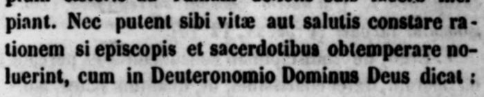
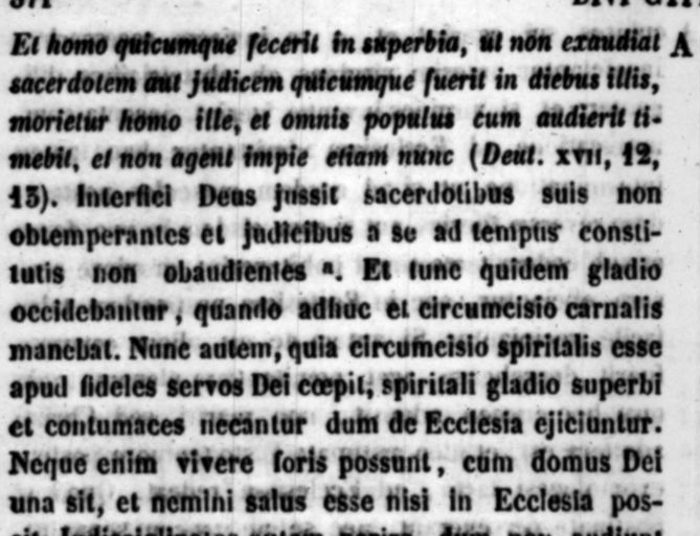

“Spiritali gladio … necantur” (cols. 370–371)
Latin: Migne, PL 4, Epistola LXII, cols. 370–371, scan n186–n187. The italic is Migne’s, marking the Scripture quotation; his note letters omitted. Highlighted: Lecky’s quotation.


Let them not think that the way of life or salvation stands open to them if they refuse to obey the bishops and priests, since the Lord God says in Deuteronomy: And the man that will do presumptuously, and will not hearken unto the priest or the judge, whoever he be in those days, that man shall die; and all the people shall hear and fear, and do no more presumptuously (Deut. 17:12–13). God commanded that those who did not obey his priests, and did not hearken to the judges he appointed for the time, should be put to death. And then, indeed, they were killed with the sword, while the circumcision of the flesh still remained. But now, since spiritual circumcision has begun among the faithful servants of God, the proud and contumacious are slain with the spiritual sword when they are cast out of the Church. For they cannot live outside it, since the house of God is one, and there can be salvation for no one except in the Church.
Translation: this edition’s draft.
Original Latin
Nec putent sibi vitæ aut salutis constare rationem si episcopis et sacerdotibus obtemperare noluerint, cum in Deuteronomio Dominus Deus dicat: Et homo quicumque fecerit in superbia, ut non exaudiat sacerdotem aut judicem quicumque fuerit in diebus illis, morietur homo ille, et omnis populus cum audierit timebit, et non agent impie etiam nunc (Deut. XVII, 12, 13). Interfici Deus jussit sacerdotibus suis non obtemperantes et judicibus a se ad tempus constitutis non obaudientes. Et tunc quidem gladio occidebantur, quando adhuc et circumcisio carnalis manebat. Nunc autem, quia circumcisio spiritalis esse apud fideles servos Dei cœpit, spiritali gladio superbi et contumaces necantur dum de Ecclesia ejiciuntur. Neque enim vivere foris possunt, cum domus Dei una sit, et nemini salus esse nisi in Ecclesia possit.
| Cyprian (Migne) | Lecky’s English (note 26) |
|---|---|
| spiritali gladio superbi et contumaces necantur | the proud and contumacious are killed |
| apud fideles servos Dei | amid the servants of God |
Lecky adds that Taylor answered Bellarmine’s argument from excommunication in the Liberty of Prophesying, sect. 14; see the Taylor page.
Further down the rabbit hole
Sources that Lecky cites in the notes next to the ones that cite this page.
- Taylor, A Discourse of the Liberty of ProphesyingLecky quotes Taylor accurately on water and Spirit
- Augustine, Letters 93 and 185“My opinion at first was that no one should be coerced”: how Augustine changed his mind
- Codex Theodosianus XVI.8.1 and XVI.10.3Constantine on Jews and converts, and the temples spared for the sake of the games
- Gibbon, Decline and Fall of the Roman EmpireAn Augustine quotation and a stronger claim about Aliturus
- Zosimus, New History, Book IVThe emperor who refused to be high priest, and the pagan pun that followed
- Aquinas, Summa theologiae, II-IIHeretics and forgers; the usurper’s subjects


Backlinks
Every place in Rationalism in Europe that links to this page (generated automatically when the site is built).
- Chapter IV, Part II: note 26